Led the existing design team, and expanded my responsibilities to Engineering, Marketing, and Customer Support, effectively touching all points Product. These responsibilities included sharing progress with stakeholders, and negotiating timelines. A complete change in processes and way of working, ensured our teams had a consistent and dependable delivery cadence and priorities were handled in alignment with our product roadmap.
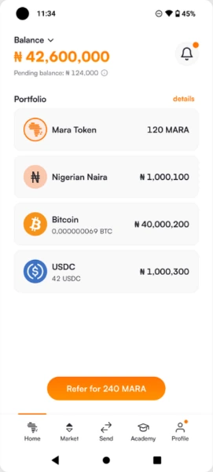
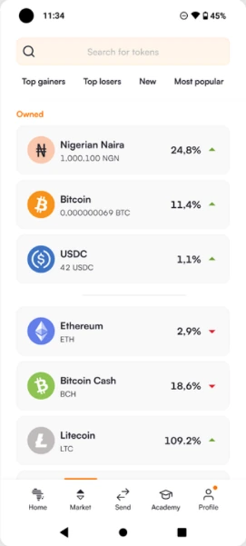
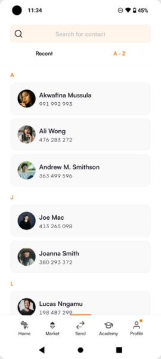
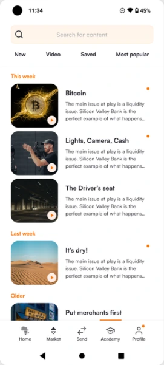
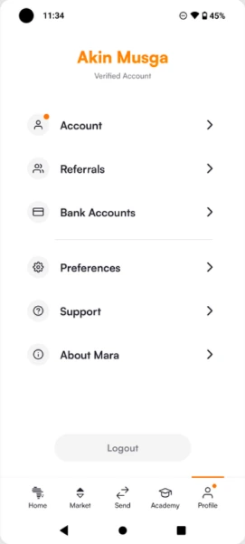
Simplify
The initial app needed an overhaul due to inconsistencies in both UI and UX, such as the navigation metaphors, how certain elements were displayed (account balance, user’s input, primary action) and overall behaviour.
My first course of action was to simplify the main flows, and cut down to the bare essential screens and components.
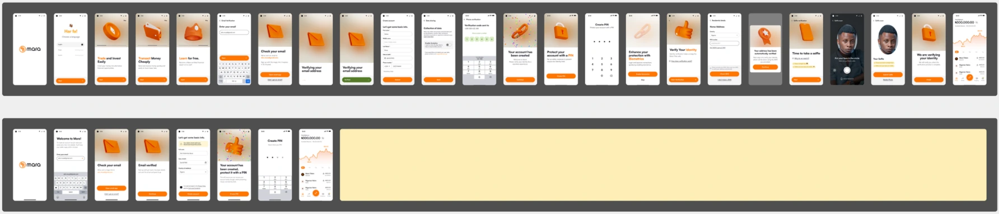
Screens: 24 down to 8 66% reduction
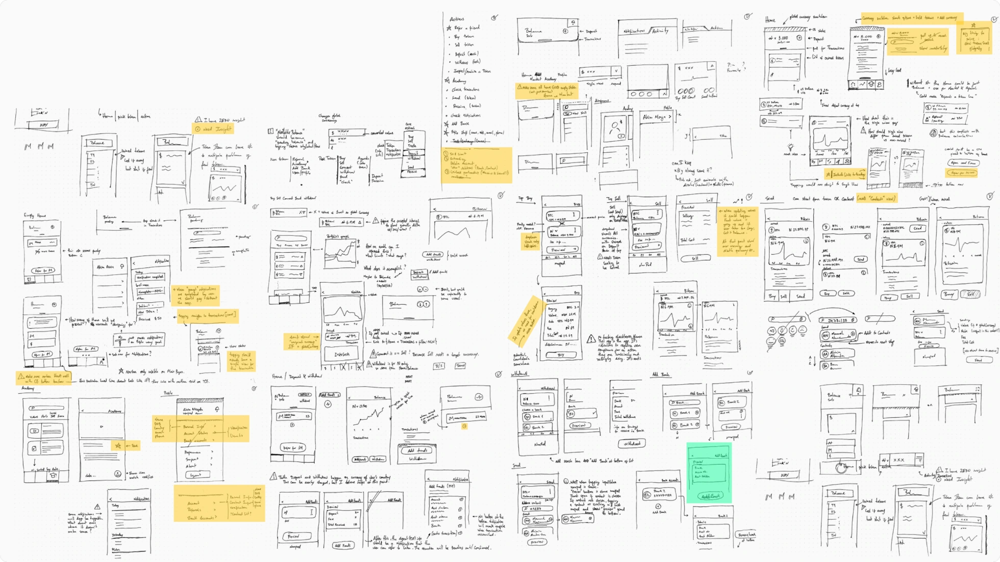
Mara app 2.0
Full redesign
After simplifying and trimming down all major flows, the inconsistencies in the components and metaphors remained, so I took to redesign the whole app. This way I could further simplify the UX and also unify the component library, making sure each component had high reusability.
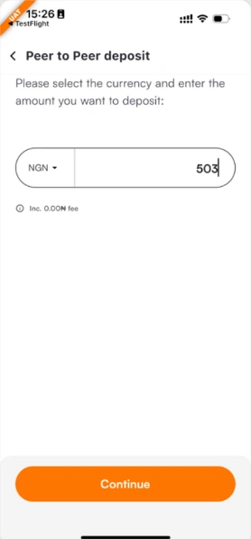
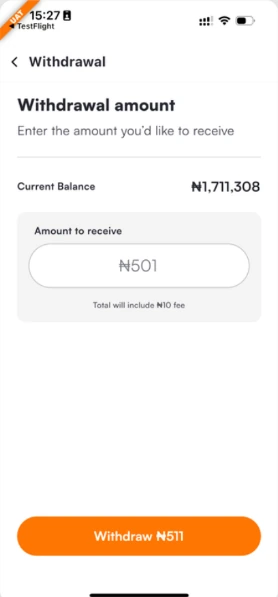
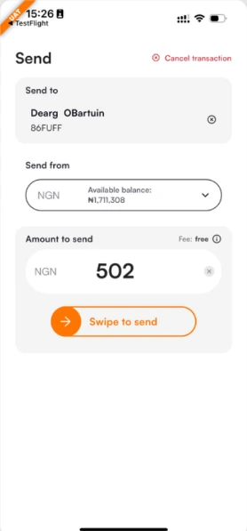
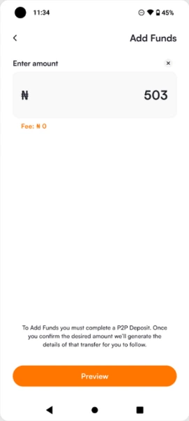
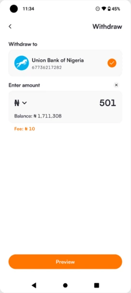
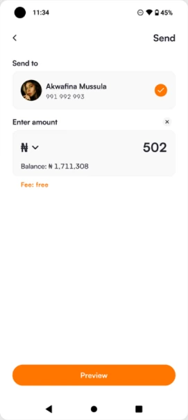
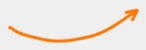
Mara app 1.0Mara app 2.0
Beyond the pixels
My responsibilities extended to the engineering team, as well as customer support and regular discussions with the companies executives. This ensured everyone was aligned at all times, in regards to product direction, vision, objectives, as well as deadlines and expectations.
The product reached over 4 millions registered users, and established important partnerships with Coinbase and others.
Mara is a digital wallet for the Nigerian market, with the goal of enabling quick and free transfers between Mara users, and giving them access to crypto currencies.